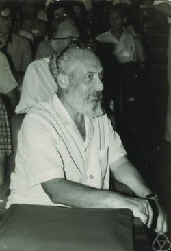

1913-1998
Samuel Eilenberg

Portrait: Konrad Jacobs, Erlangen, CC BY-SA 2.0 de, Wikimedia Commons.
Events (6)
- 1895Algebraic topology: Betti numbers to homology groups
systematiser · Algebraic topology
- 1942Homological algebra
developer · Algebra
- 1945Axiomatic homology
developer · Algebraic topology
- 1945Category theory
originator · Algebra
- 1948Lie algebra cohomology
developer · Algebraic topology
- 1955Abelian categories and derived functors (Tohoku)
systematiser · Category & homological algebra